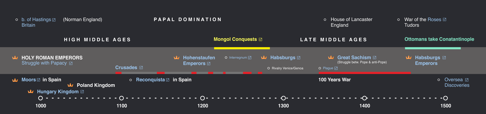
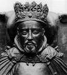
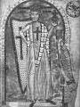
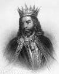
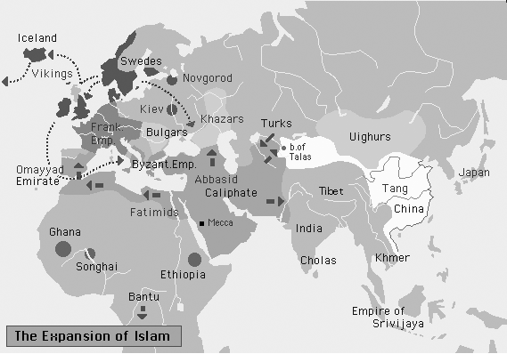
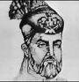
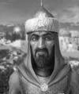
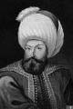
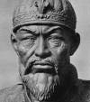

Periods Comparation World History

Europe
1000 - 1500 : Calipha Seljuk Khanate Pro Pro Version 
Middle east
1000 - 1500 : Holy Roman Crusade Habsburg Pro Pro Version
This app is work properly. Just wait...
Pro version available soon
No ads, zoom feature and more data with clickable timeline. Just hold down, we still drink coffeee.
Use Free versionBritain
Summary : Story of 'King Arthur'. Anglo-Saxon conquests. Viking and Norman Invasions. William of Normandy.
Battle of Hastings (1066)
The Battle of Hastings resulted in the conquest of England by the Normans and is ranked as one of the battles that changed the course of history.
Harold Godwinson became king of England in 1066, after his father Edward died. But William of Normandy claimed that Edward - his cousin - had promised the English throne to him.
The King of Norway also claimed the English throne and invaded northern England. Harold marched up north and defeated the Norse at the Battle of Stamford Bridge. (This was the last great battle in more than 200 years of Anglo-Scandinavian conflict). In Harold's abscence, William landed his army in southern England without opposition.
Harold rushed south and met William's invading troops near the town of Hastings. He almost won a victory. The Norman cavalry wore itself out in charges up a hill that was held by Harold's men. Then the Normans pretended to retreat in disorder, causing the English militia on the flanks to storm down the hill in pursuit. The Norman knights split the English formation, cutting the separate units of the enemy army to pieces.
After William defeated and killed Harold he became the first Norman King of England as William I, the Conqueror.
HENRY IV (1050 - 1106) German Emperor

Henry IV succeeded to the throne at the age of six. He attempted to con-solidate his imperial power by engaging in a monumental struggle with pope Greory VII.
As a result of the investiture con-troversy (wether bishops should be appointed by the pope or emperor) Henry IV deposed the pope, the pope in return excommunicated the emperor.
The opposition of the German princes forced Henry to travel to Canossa in Italy and beg for absolution from the pope (Penance at Canossa 1077).
Following a second excommunica-tion Henry IV nominated the archbishop of Ravenna as antipope. Besieged by the reform movement led by pope Urban II (the successor of Gregory VII) Henry IV was forced to abdicate in 1106, the same year he died at Liege.
Moorish Spain
Spain experienced a great flowering under the Omayyad Dynasty (755 - 1031).
Abd Ar-Rahman III was the greatest ruler of the Omyyad Arab Muslim dynasty of Spain. The Omyyad dynasty in Spain was established in 756 by the only surviving prince of the bloodbath that had decimated the Omyyads in Damascus at the hands of the first Abbasids.
In 929 Abd Ar-Rahman III proclaimed himself Caliph, thereby challenging the spiritual authority of the Baghdad Caliphate. He made Islamic Spain a cultural center of the world and his capital Cordoba the largest city in Europe.
Here the great optician Al Hassan investigated the functioning of the human eye and Abu Kasim wrote the first illustrated book on surgery. Moorish Spain was the center from which medical education in Europe largely came from.
STEPHEN I (975 - 1038) King of Hungary

Saint Stephen I was the first king of Hungary.
Stephen, a member of the Magyar Arpad dynasty, united the princes of Hungary and became thus the founder of the Hungarian state.
On Christmas Day in the year 1000 he was anointed king of Hungary and is said to have received the famous crown of St.Stephen from Pope Sylvester II.
Crusade
The Crusader movement was evoked by the advance of the Seljuk Turks, who had taken Jerusalem from the Fatimid caliphs of Egypt and decisively defeated the Byzantine army in the battle of Manzikert.
Alarmed the Byzantine emperor appealed to Rome for help which presented the pope with a golden opportunity to reassert his supremacy over the eastern Church which had broken away from Rome in AD 1054.
At the same time pilgrimages to Jerusalem had encountered increased hostility from the Seljuks which led Pope Urban II to preach a Holy War against the heathens.
The first Crusade (1096-99) led to the successful storming of Jerusalem and the establishment of the kingdom of Jerusalem and other crusader states.
The second Crusade (1147-9) was led by the emperor Conrad III and by Louis VII of France, but foundered on quarrels between its leaders and the barons of Jerusalem, who were in alliance with Moslem Damascus, which the Crsuaders wished to attack.
The third Crusade (1189-92) was led by emperor Frederick I Barbarossa (who died before reaching Jerusalem); King Richard I of England and King Philip II Augustus of France. It failed to regain Jerusalem, which had been captured by the Moslem leader Saladin in 1187, but gained the concession that pilgrimages to Jersusalem were allowed. Despite some successes the crusades failed to check the Turkish advance.
The climax came in 1204 when the Fourth Crusade became an attack on the Greek (Byzantine) empire instead of the Moslems. The Crusaders captured Constantinople and set up a short-lived Latin Empire (1204-61). The main beneficiaries were the Venetians who financed the enterprise and ended up by seizing all the islands that lay on the trade routes they now monopolized.
The Fifth Crusade (1228-29) was led by the emperor Frederick II. A truce between Frederick and Moslems secured Jerusalem for the Christians, but Pope Gregory IX disapproved of such trucemaking with the heathens, and severely disciplined Frederick. Soon the Moslem captured the city again and two more Crusades (1248-54, and 1270) did nothing toward freeing the Holy City.
Moorish Spain
Spain experienced a great flowering under the Omayyad Dynasty (755 - 1031).
Abd Ar-Rahman III (921-61) who claimed the Caliphate in 929. But after 1008 conflicts over the succession to the throne led to a civil war and the dissolution of the Omayyad Caliphate.
Reconquista (1085-1340)
After the king of Castille initiated the Christian offensive (Reconquista) the Berber Almoravids were summoned for help. In 1085 El Cid conquered Toledo and made himself master of Valencia. In 1118 Alfonso of Aragon conquered Saragossa. Later Ferdinand III of Castile conquered the South, incl. Cordoba (1236), and completed the Reconquista.
After the union of Castile and Aragon the last remnant of Moorish power, the Emirate of Granada, was eliminated in 1492.
FREDERICK I (1122 - 1190) German Emperor

Frederick I, Holy Roman Emperor, was born of the Hohenstaufen family. After succeeding his father as duke of Swabia, Frederick I was elected German king and crowned emperor by the pope in 1155.
Frederick Barbarossa became one of the greatest monarchs of medieval Germany, but his reign was a continuous struggle against unruly vassals at home, the city republics of Lombardy, and the papacy.
He was able to assert his feudal superiority over Poland, Hungary, Denmark, and Burgundy, and he went on several campaigns in Italy.
Barbarossa died while on the Third Crusade to free Jerusalem from Saladin.
The Great Interregnum (1254 - 1273)
The Great Interregnum of the medieval Holy Roman Empire occured after the death of emperor Frederick II.
The German princes, supported by the papacy, profited from the weakness of the last years of Hohenstaufen imperial rule and elected ineffectual kings.
The Pope Gregory X, to find support for a new crusade and to secure a counterweight to the king of Sicily, persuaded the princes to elect Count Rudolph of Habsburg emperor in 1273.
RUDOLPH I (1218 - 1291) German King

Rudolph of Habsburg was chosen king by German princes in an Imperial election in 1273 following the chaotic period of the Great Interregnum.
Rudolph I became the first of a long line of Habsburg emperors. He was recognized by Pope Gregory X on his promise to renounce all imperial rights in Italy and to lead a new crusade.
French influence at the papal court, however, prevented Rudolph from being crowned Holy Roman emperor by the pope.
The Black Death or Bubonic Plague
The Black Death or Bubonic Plague is a disease that is caused by a germ called Yersinia pestis. It is spread to humans by fleas from infected rodents. The disease causes swelling of the lymph glands. The Greek word for groin is boubon, which is bubonic. The first symptoms are headaches, vomiting, and later most horribly: the skin turns black.
The most devastating outbreak of the Bubonic Plague was in 1346-51. It began in Kaffa, a town on the Crimean Coast. By the end of 1348, the plague covered all of Italy and most of France. By 1350 it had largely passed out of western Europe; it ended in Russia around 1351.
Over 25 million people died throughout Europe and for a time cultivation became impossible due to a shortage of hands. Nothing like that has happened before or since. In the space of two years, one out of every three people was dead.
These general numbers disguise the uneven nature of the epidemic. Some areas suffered little, others suffered far more. Here are some examples.
Between 45% and 75% of Florence died in a single year. 1/3 died in the first six months. Its entire economic system collapsed for a time.
In Venice, which kept excellent records, 60% died over the course of 18 months: 500-600 a day at the height.
Certain professions suffered higher mortality, especially those whose duties brought them into contact with the sick - doctors and clergy. In Montpellier, only seven of 140 Dominican friars survived. In Perpignan, only one of nine physicians survived, and two of 18 barber-surgeons.
Great Schism (1378-1417)
In the 13th century Germany fell into disunion and the French king began to play to role of guardian and rival to the pope.
After Rudolf of Habsburg was elected (1273) Emperor, the policy of Rome began to fluctuate between Germany and France. The struggle between French- and Anti-French forces led to the election of Pope- and Anti-Pope.
This split is called the the Great Schism (1378-1417) and brought to an end the era of papal domination.
Each Pope excommunicated the adherence of his rival, so that by one standard or another all Christendom was damned during this time.
as the
In the late 1400's the House of York fought the House of Lancaster for the English crown. Because Lancaster's heraldic badge was a red rose and York's was a white rose, the long conflict came to be known as the Wars of the Roses (1455 - 85).
The wars started when the nobles of York rose against Henry VI of Lancaster who was a feeble ruler. Edward IV, of York, replaced Henry as king.
Later, Henry again became king, but lost his crown once more to Edward after the battle of Tewkesbury in 1471. The Yorkists held power until Richard III lost his throne to the Lancastrian Henry Tudor.
Henry Tudor married into the House of York. This personal union ended the conflict, and a new famous dynasty, the Tudors, emerged.
Habsburgs
The Habsburgs were one of the principal dynasties of Europe from the 15th to the 20th century.
The dynasty of the Habsburgs began when Pope Gregory X, in order to find support for a new crusade and to secure a counterweight to the king of Sicily, persuaded the German princes to elect the Count Rudolph of Habsburg emperor in 1273.
The real ascendancy of the Habsburgs began when Frederick V, the Habsburg king of Germany from 1440, was crowned Holy Roman emperor as Frederick III in 1452; this title remained in the family until 1806.
Some families have fought, others have intrigued their way to world power; the Habsburgs married their way. They began with Austria and then married - the lady's name scarely mattered - the Netherlands, Burgundy, the duchy of Milan, Sicily and finally Spain including all her dominions on the American continent.
The highpoint of Habsburg power came under Charles V (1500-58) who ruled over an empire over 'which the sun never set'.
The dynastic division at Charles death initiated the Spanish Habsburg line (until 1700) and the Austrian line which ruled the Habsburg posssessions in central Europe until 1918.
Oversea Discoveries
In the fifteenth century the Mongol rule in Asia collapsed and the overland trade they had encouraged fell off sharply. At the same time Arabic transit trade became more costly, because of heavy custom fees levied by the Ottoman Turks, who controlled the Black Sea trade.
The search for an alternative route to the Orient was initiated by Henry the Navigator a Portuguese Prince, who planned to outflank Islam with a circumnavigation of Africa. In 1488 the Portuguese rounded the cape of Africa and in 1498 Vasco da Gama reached the lucrative Indian market.
In Spain - only recently reconquered from the Moslems - European scholars had re-discovered ancient Greek texts which had been preserved by the Moslems. The new interest in Greek writing introduced the long forgotten idea of the global shape of the earth. An enthusiastic supporter of this theory was Christopher Columbus, who advanced the idea of sailing westwards around the world to China.
In 1492, after a journey of 61 days, Columbus landed in the Bahamas; in 1497 the Florentine John Cabot discovered the North American continent. Proof of the global shape of the earth was provided by the first circumnavigation by Ferdinand Magellan, a Portuguese in the service of Spain. The Pacific coast was explored by the English naval hero Francis Drake, while the French came into action through the exploration of the St. Lawrence river by Jacques Cartier.
Islam expands
Summary : Omar II, the Abbasids, Sufism.
Ottomans
Summary : Timur and Ottoman Turks. Mamelukes.Fall of Constantinople.
The Fatimids

The Fatimids claimed descent from Fatima, the daughter of Mohammed.
As partisans of Ali, Fatima's husband, they were Shi'ites and they became leaders of the Isma'ili movement that began to organize the overthrow of the Abbaside caliphate. By 911, their leader who called himself al-Mahdi had been proclaimed the rightful caliph - or imam as the Shi'ites preferred.
The Fatimids conquered northern Africa and in 972 conquered Egypt where they founded a new capital, al-Kahira (Cairo), and established the famous university mosque al-Azhar.
The Fatimids ruled from Tunesia to Syria but after about 1060 Fatimid power declined and their rule was confined to Egypt. On the death of the last Fatimid caliph in 1171, Egypt again returned to the Sunni fold.
MACHMUD of GHAZNI (c.971 - 1030)

Sultanof Afghanistan . Machmud was the ruler of Ghazni, a kingdom comprising Afghanistan and part of Iran.
Machmud conquered Kashmir and the Punjab and for twenty-five years made yearly invasions of Northern India.
Machmud plundered Northern India and used the booty to patronize his court in Ghazni making it the centre of Persian-Islamic civilization rivalling the splendour of Baghdad.
Firdausi, the great Persian poet resided at his court, so did the mathematician Al Biruni.
Seljuks
The Seljuks were a ruling familiy of the Ogus branch of the Turkish peoples who began settling in lands of the Abbasid caliphate, becoming Muslims, in the 10th century.
They established a local power, quickly expanded it and occupied Baghdad, capital of the caliphate, in 1055. They ruled most of the lands of the caliphate, under Abbasid suzerainty, with the title of sultan.
The empire split after the death of Nizam al-Mulk, but a branch remained as rulers of Anatolia (incorporated in the Muslim world by Seljuk conquest from the Byzantines) from the early 12th century until the Mongol conquest in the 13th century.
SALADIN (1138 - 1193 ) Ruler of Egypt

Saladin was the great Kurdish commander of Syrian forces and chief minister of Egypt.
In 1186 he assumed sole rule of all Egypt and Syria. He became the founder of the Ayyubid dynasty (1186-1250) which was named after his father Ayyub.
Saladin is best known as the opponent to the forces of the third Crusade and his capture of Jersusalem ending its 88-year occupation by the Franks.
The Mamlukes
The Mamlukes were Turkish prisoners of Genghis Khan, who sold them as slaves to the Ayyubid Sultan of Egypt. The Sultan trained them as soldiers, and eventually they became his Palace guard.
In 1250, the Mamlukes seized control of Egypt, and ten years later they inflicted the first great defeat on the Mongol armies trying to seize Palestine. The Mamlukes overran Asia Minor, and they ruled Egypt for more than 250 years. Selim I of Turkey finally defeated them in 1517 and conquered Egypt.
Under Turkish rule the Mamlukes were kept on as soldiers. They attacked Napoleon when he invaded Egypt in 1798. In 1811, Egypt's Viceroy Mehemt Ali orderd the massacre of all Mamluks, and they disappeared from history.
OSMAN I( 1258 - 1324) Turkish Sultan

Osman was the ruler of Turkish frontier warriors in the service of the Seljuks.
He established a principality in Anatolia, from where he waged warfare against the Byzantines. He conquered Bursa on the Asiatic shore opposite Constantinople, proclaimed himself Sultan and established the Ottoman empire. The name of the empire derives from the Arabic form 'Uthman' of his name.
TIMUR (1336 - 1405) Mongol Conqueror

The heir presumptive of Genghis Khan, Timur or Tamerlane (the Lame) proclaimed himself renewer of the Mongol empire.
From his capital at Samarkand Timur spread destruction far and wide. In 36 cruelly conducted campaigns he conquered from Syria to Delhi and left a path of horror, ruins and desolated countries.
Although he never took up permanent residence he strove to make his capital Samarkand the most splendid city in Asia. Before the beginning of a 'Holy War' against China the conqueror died and his empire with him.